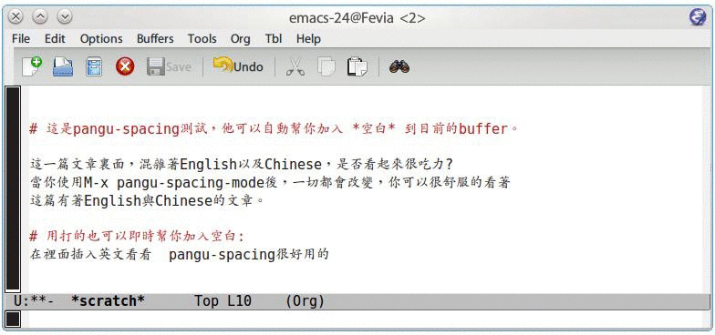

pangu-spacing 是 emacs 上的一個 minor-mode, 啟用他後，他會在英文與中文 之間自動加入空白符號，讓你使用 emacs 在閱讀文章的時候能夠非常舒適 :)

名稱由來
pangu-spacing 名稱來自於 paranoid-auto-spacing 的 README
引述自 paranoid-auto-spacing README 為什麼你們就是不能加個空格呢？ 如果你跟我一樣，每次看到網頁上的中文字和英文、數字、符號擠在一塊，就會 坐立難安，忍不住想在它們之間加個空格。這個外掛（支援 Chrome 和 Firefox） 正是你在網路世界走跳所需要的東西，它會自動替你在網頁中所有的中文字和半 形的英文、數字、符號之間插入空白。 漢學家稱這個空白字元為「盤古之白」，因為它劈開了全形字和半形字之間的混 沌。另有研究顯示，打字的時候不喜歡在中文和英文之間加空格的人，感情路都 走得很辛苦，有七成的比例會在 34 歲的時候跟自己不愛的人結婚，而其餘三成 的人最後只能把遺產留給自己的貓。畢竟愛情跟書寫都需要適時地留白。 與大家共勉之。
安裝方式
這個套件已經被 melpa 所收錄，所以你只要很開心的將以下程式加入到你的 .emacs
(add-to-list 'package-archives '("melpa" . "http://melpa.milkbox.net/packages/") t)
再使用 M-x package-install pangu-spacing ，就可以完成安裝。
啟用 pangu-spacing
在你的 .emacs 加入以下幾行，可以讓 pangu-spacing 全域性執行
(require 'pangu-spacing) (global-pangu-spacing-mode 1)
如果你不想全域性執行，則使用 M-x pangu-spacing-mode 就可只在目前的緩
衝區上加上空格。
pangu-spacing 設定
在預設的情況下，pangu-spacing 插入的空白符號並不會真的加入到檔案裏面， 而只是顯示在 emacs 上，如果你希望他是真的將空白符號加入到你的檔案，則 你必須使用下面方式將這個選項打開。
(setq pangu-spacing-real-insert-separtor t)
如果你只想要在某些情況下才自動插入空白到檔案，比如編輯 org-mode 的時 候，則你可以這樣做
(add-hook 'org-mode-hook '(lambda () (set (make-local-variable 'pangu-spacing-real-insert-separtor) t)))